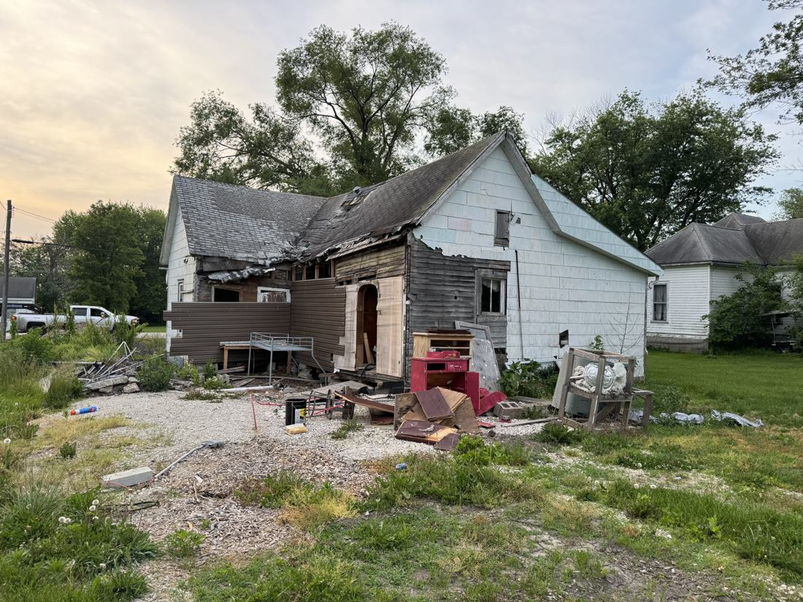
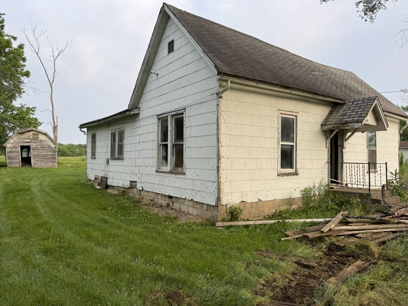
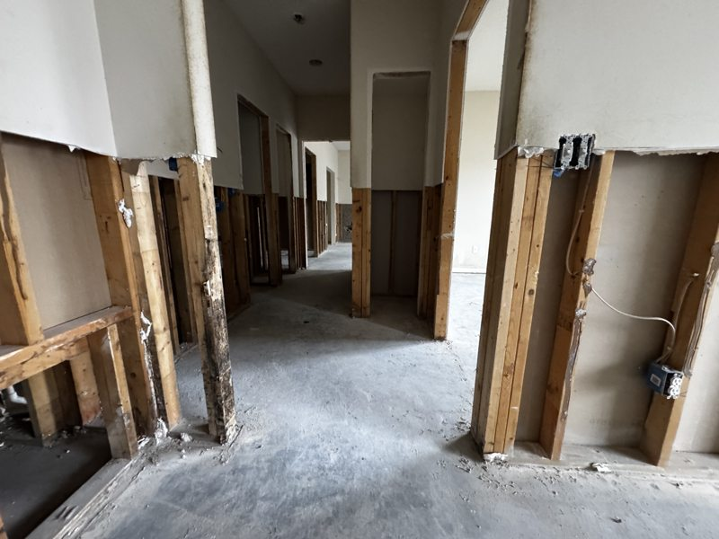

"I don't want the whole house gone. I just want that part gone." I hear some version of that almost every week, and it's usually pointed at a chimney nobody has used in 20 years, a porch that's rotted off its posts, or an addition somebody tacked on in 1974 that has been sinking ever since.
I'm Chris Kurtz, owner of Atlas Excavation & Demolition in Columbia, MO. Partial demolition is a different animal from a full teardown. On a teardown, everything goes and the only thing you're protecting is the neighbor's fence. On a partial demolition, half the job is protecting what stays standing. Here's how it works and what it costs.
Quick Answer: Partial demolition in Columbia, MO means removing one part of a structure while the rest keeps standing. Typical local ranges run $900 to $2,800 for a chimney taken to the roofline, $700 to $2,000 for a deck, $1,200 to $3,500 for a covered porch, and $3,000 to $9,000 for a room addition, all including haul-off. Most of this work needs a city permit because it changes the structure, and anything touching a bearing wall or roof structure needs an engineer's letter first. The removal is usually 1 to 5 days. Closing the building back in is what takes longer. Call Atlas at (573) 234-6641 for a free walkthrough and a flat price.
In This Guide:
What Partial Demolition Actually Means
Partial demolition, sometimes called selective demolition, is any job where a piece of the structure comes off and the rest of it stays in service. The building is still a building when we leave.
That one difference changes everything about how the work runs. On a full teardown we can bring a machine in and take the structure down in a controlled push. On a partial demolition we're working to a line. Everything on one side of that line goes, everything on the other side has to end up weathertight, structurally sound, and looking like it was always that way.
The jobs that come up most around Boone County:
- Chimney removal. Usually an unused masonry stack that's leaking, shedding brick, or failing a home inspection during a sale.
- Porch and deck removal. Rotted, pulling away from the house, or being replaced with something better.
- Addition removal. A back room, sunroom, or wing that was added later and has settled, leaked, or simply outlived its use.
- Interior strip-outs. Taking a house or commercial space back to studs and slab for a remodel, leaving the shell.
- Attached garage or carport removal. The structure comes off, the house wall gets closed in.
What all of these have in common is the hand-off. There's a point where demolition stops and carpentry starts, and the jobs that go badly are the ones where nobody agreed in advance where that point is.
Ask this before you hire anybody: who closes the wall? Some demolition outfits stop at "the addition is gone" and leave you with an open hole and a tarp. We frame, sheathe, and weather-seal the opening as part of the job, then hand a clean surface to your siding or roofing contractor. Get that in writing from whoever you hire, because a tarped opening through a Missouri winter turns a small job into a big one.
What Partial Demolition Costs in Columbia, MO
Here are the ranges we actually quote around Columbia. Every one of these includes the removal, the debris haul-off, and closing the opening back in to a weathertight surface.
| Job | Typical range | Time on site |
|---|---|---|
| Chimney, roofline down | $900 - $2,800 | 1 - 2 days |
| Chimney, full stack and breast | $2,500 - $7,000 | 2 - 4 days |
| Wood deck | $700 - $2,000 | 1 day |
| Covered porch | $1,200 - $3,500 | 1 - 2 days |
| Room addition | $3,000 - $9,000 | 2 - 5 days |
| Interior strip-out | $3 - $8 per sq ft | Varies by size |
Three things move a partial demolition quote more than anything else.
What's underneath it. A deck on posts comes off fast. The same footprint sitting on a poured slab or a block crawlspace means breaking out and hauling concrete, which is its own cost. Our concrete removal page covers how that side gets priced.
What runs through it. Additions almost always have electrical in them, and plenty have plumbing or a gas line for a heater. Those have to be traced back, killed at the source, and capped by the right trade before anything comes apart.
Access. If a machine can reach it, the job is cheaper. A chimney in the middle of a house or an addition behind a fenced back yard means more hand work, and hand work is hours.
Chimney Removal in Columbia, MO
Chimney removal is the single most common partial demolition call I get, and it's almost always the same story. The fireplace hasn't been lit in years, the flashing leaks, the crown is cracked, and a home inspector just put it in a report during a sale.
You have two real options and they are very different jobs.
Roofline down. We take the stack apart from the top to just below the roof deck, then frame, deck, and shingle the hole closed. The chimney breast inside the house stays where it is. This is what most people want, because it kills the leak and the maintenance without opening up the living space. Figure $900 to $2,800 and a day or two.
The whole thing. Stack, breast, and footing, all the way down through every floor it passes. Now you're patching drywall, ceiling, and flooring on each level, and you may be adding framing where the masonry was carrying something. That's $2,500 to $7,000 and several days, but you get the floor space back.
One thing that surprises people. A masonry chimney is heavy, and older Columbia houses sometimes have framing that leans on it more than the original plans admitted. We check that before the first brick comes off. If the stack is carrying anything, an engineer sizes what replaces it.
The other honest warning is the roof. Once the stack is gone you have a hole in the roof plane, and shingles that have been in the Missouri sun for 15 years will not match new ones. On a roof with much life left we patch it and it looks fine from the ground. On a roof near the end anyway, this is a good moment to talk to a roofer about doing the whole slope.
Porch and Deck Removal
A deck is the simplest partial demolition on the list. Cut the ledger free, pull the decking and framing, dig or break the footings, haul it off. Most are a single day. The one detail that matters is the ledger board, because that's where the deck was bolted to the house. Every one of those bolt holes is a path for water, so the band joist gets inspected, repaired if it's soft, and flashed before we're done.
A covered porch is a bigger job than it looks. The porch roof usually ties into the main roof, which means the removal has to run in sequence: roof structure first, then posts, then the deck and footings. Take the posts out early and the roof comes down on its own schedule instead of yours. Then the main roof plane needs closing where the porch tied in, and the house wall behind it needs siding and often a rebuilt door threshold.
If your job is closer to a shed, detached structure, or freestanding deck, we cover that separately in our post on shed and deck removal in Columbia, MO.
Addition Removal: Taking a Wing Off the House

Addition removal is the most involved partial demolition we do on residential property, and around here there's a lot of it. Mid-Missouri farmhouses and older Columbia bungalows have been added onto for a century, often by whoever owned the place at the time, often without a permit and without a foundation worth the name.
The tell is usually a floor that slopes toward the addition, a door that won't latch, or a crack running up the wall where the old structure and the new one meet. What happened is that the addition was built on a shallow footing or on piers set above the frost line, so it moves with the seasons while the original house sits still. Mid-Missouri clay makes that worse, since it swells wet and shrinks dry.
Here's the sequence we run:
- Trace and kill the utilities. Electric, water, gas, and any drain running out into the addition, capped back at the main structure by the right trade.
- Strip the inside. Fixtures, cabinets, drywall, and flooring come out first so we can see the framing and confirm what's carrying load.
- Cut the connection. This is the careful part. The roof and wall are separated along a clean line, with the original structure shored if anything was leaning on the addition.
- Remove and haul. Structure comes down, debris gets loaded and hauled. Where the material can be sorted for recycling, it is.
- Break out the foundation. Slab, footings, or block walls come out, and the hole gets backfilled with clean fill compacted in lifts so it doesn't settle later.
- Close the house in. Frame the opening, sheathe it, house-wrap it, and leave a weathertight wall ready for siding.
That last step is the one that separates a finished job from a mess. When we pull off, you should have a solid wall, a graded yard where the addition used to be, and nothing left in the grass.
Interior Partial Demolition and Load-Bearing Walls

Interior partial demolition is the version general contractors call us for. Take the space back to studs and slab, leave the shell and the structure, hand it over clean so the build-out can start Monday.
The work itself is straightforward. The judgment call is always the same one: is this wall holding anything up?
If a wall is bearing, removing it is not a demolition decision. Something has to carry that load afterward, which means a beam and posts sized by a structural engineer, a load path continued down to a footing that can take it, and a temporary shoring wall holding the ceiling while the swap happens. A residential engineer around Columbia typically runs $350 to $900 for the letter and the detail, and the city will want to see it with the permit application.
Anybody who offers to pull a bearing wall without an engineer is selling you a problem you'll find later, usually as cracked drywall upstairs, doors that stop latching, and a ridge line you can see sagging from the curb. We'll do the demolition and set the shoring. The beam design comes from the engineer.
For the full picture on commercial and residential strip-outs, see our post on interior demolition in Mid-Missouri.
Permits and Asbestos on Partial Demolition
This is where partial demolition jobs lose weeks, and it's almost always because somebody assumed a small job meant no paperwork.
The permit. Inside Columbia city limits, work that changes the structure of a building is permitted work. Removing a chimney, pulling a covered porch, taking off an addition, or opening a bearing wall all qualify. The application goes through Building and Site Development, and current forms and fees are on the City of Columbia Building and Site Development page. Outside city limits, Boone County runs its own process and some work falls outside it entirely. Our post on the demolition permit process in Columbia, MO walks through both.
Asbestos. This is the one people are most surprised by on a small job, and it's the one with real teeth. Missouri regulates asbestos on demolition and renovation work, not just on full teardowns, and partial demolition on an older building is exactly the scenario the rules exist for. Chimney flashing and mastic, floor tile and the black adhesive under it, pipe wrap, siding, and old joint compound are all common finds in Columbia housing stock built before the early 1980s.
The practical version: if the building is old enough, get the survey before demolition starts, not after somebody has already put a sawzall through the wall. A survey is cheap next to an abatement done as an emergency. The EPA's asbestos resources explain what the regulated materials actually are, and Missouri DNR handles notification on this side of the state line.
Utility disconnects. Anything with power, water, or gas running to it needs those killed at the source and capped by the utility or the licensed trade, with documentation. On an addition or an attached garage this is usually the item that sets the start date, because the utility schedules on their calendar and not yours.
Why Columbia and Mid-Missouri See So Much of This
Partial demolition is steady work here for reasons that are specific to this area.
The housing stock is old and it's been modified. Central Columbia neighborhoods, plus the small towns around us, are full of houses from the 1920s through the 1950s that have picked up a back porch, a sunroom, a carport, or a bedroom somewhere along the way. Those additions were built to whatever the standard was at the time, and the ones built on shallow footings are the ones we're removing now.
The soil doesn't help. Mid-Missouri clay swells and shrinks with moisture, and our freeze-thaw cycle works on anything set above frost depth. An addition on piers two feet down will move every year. The original house on a proper foundation won't. Give that 40 years and the joint between them fails, which is why so many of these jobs start with a crack in a wall.
Then there's the sale trigger. A lot of this work happens because a house is going on the market and an inspector flagged the chimney or the rotted porch. That puts a clock on it, and it's why we keep partial demolition jobs scheduled tighter than teardowns. We handle these across Columbia, Ashland, Boonville, Fulton, Centralia, Hallsville, Harrisburg, Rocheport, and the rural stretches in between, and rural properties usually get a same-week walkthrough because we're already out that direction.
Need Part of a Structure Gone?
Free on-site walkthrough, a flat written price, and a weathertight wall when we leave. No guessing from a satellite photo.
Get Your Instant Estimate Or Call (573) 234-6641Frequently Asked Questions
Do I need a permit for partial demolition in Columbia, MO?
Usually yes. Inside Columbia city limits, work that changes the structure of a building is permitted work, and that covers taking a chimney down, pulling a porch off, or removing an addition. The permit desk at Building and Site Development is the place to confirm scope before anybody starts swinging. Small non-structural jobs like a freestanding deck sometimes fall below the threshold, but the safe assumption is that if you are removing something attached to the house, a permit is involved. Outside city limits, Boone County runs its own process and the requirements are lighter in some cases. We pull the permit as part of the job so the scope on the application matches the work we actually do.
How much does chimney removal cost in Columbia, MO?
Taking a chimney down to just below the roofline runs about $900 to $2,800 in the Columbia area, and it is usually a one or two day job. That is the common request, because it solves the leaking and the tuckpointing problem without opening up the inside of the house. Removing the whole stack including the chimney breast inside the living space runs $2,500 to $7,000, because you are then patching floors, walls, and ceiling on every level it passed through. Roof patching is the variable people forget. Once the stack is gone you need decking, underlayment, and shingles across the hole, and matching aged shingles is rarely perfect.
Can you remove a load-bearing wall during interior demolition?
Yes, but not as a demolition decision on its own. If a wall carries load, something has to carry that load afterward, which means a beam and posts sized by an engineer and a temporary shoring wall while the swap happens. Around Columbia a residential structural engineer typically runs $350 to $900 for the letter and the detail, and the city wants that letter with the permit application. Any contractor who offers to pull a bearing wall without an engineer is handing you a problem that shows up later as cracked drywall, sticking doors, and a sagging ridge. We do the demolition and the shoring. The beam design comes from the engineer.
How much does it cost to remove a porch or an addition?
A wood deck usually runs $700 to $2,000. A covered porch with a roof structure tied into the house runs $1,200 to $3,500, because the roof has to come apart in sequence and the house wall needs closing in behind it. A full room addition is a bigger number, generally $3,000 to $9,000 depending on size, foundation type, and whether utilities run out into it. Slab or crawlspace underneath matters, since breaking out and hauling concrete is its own line item. Every one of those figures includes the haul-off. We price the removal and the disposal together as one flat number after walking the property.
How long does partial demolition take?
The removal itself is fast. Most chimney, porch, and deck jobs are done in one to two days, and a room addition is typically two to five days. The calendar is set by what happens before and after. Permit review, an engineer's letter if a bearing wall or roof structure is involved, and an asbestos survey on older buildings all come first. Closing the house back in comes after, and that is the part owners underestimate. Plan on two to four weeks from the first phone call to a finished wall, with most of that spent on paperwork and scheduling rather than machine time.
Need Partial Demolition in Columbia or Mid-Missouri?
Partial demolition is a precision job wearing work boots. The removal is the easy half. Knowing where to stop, what's holding up what, and how to leave the building weathertight is the part that matters. Atlas Excavation & Demolition handles chimney removal, porch and deck demolition, addition removal, and interior strip-outs across Columbia, Ashland, Boonville, Fulton, Centralia, and the rest of Mid-Missouri. We're licensed and insured, we answer the phone, and we close the wall back in before we leave.
- Phone: (573) 234-6641
- Email: hello@deployatlas.com
- Online: Instant estimate form